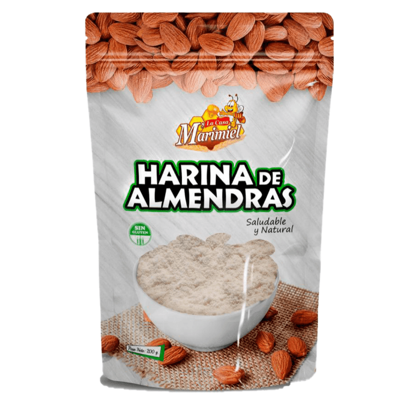
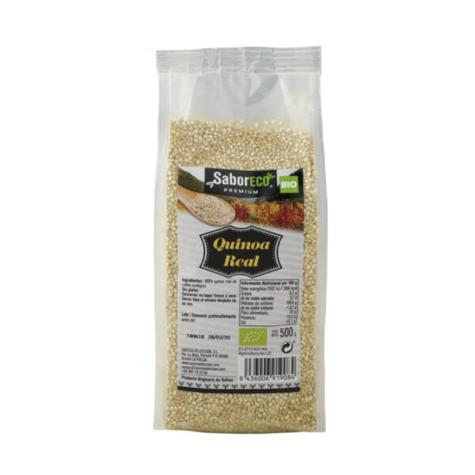
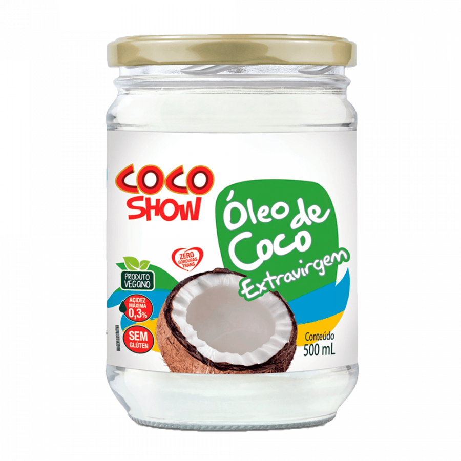
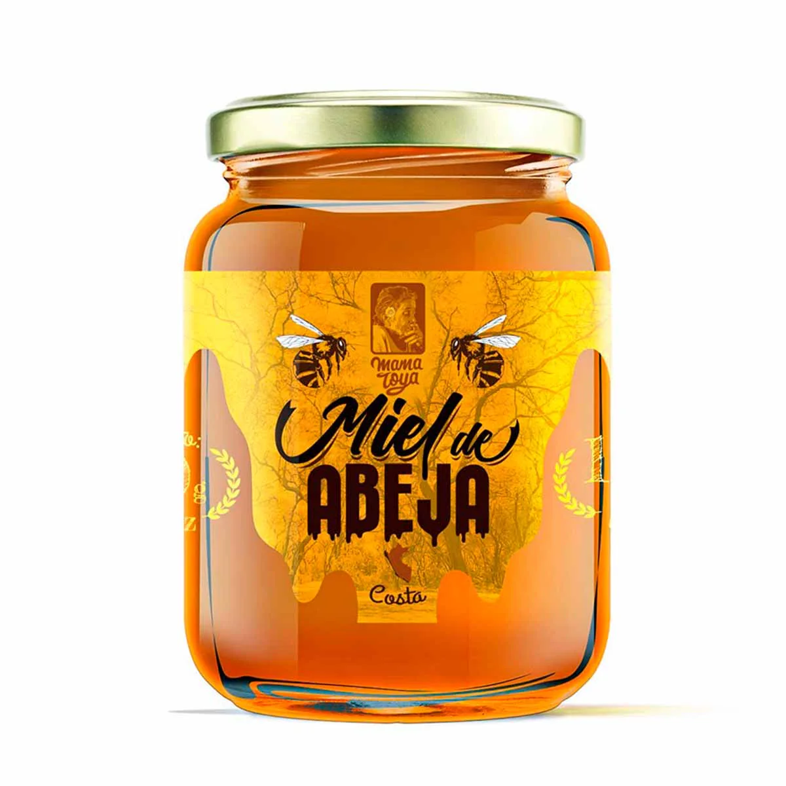

Origen te lleva productos orgánicos confiables a tu puerta y a la puerta de los que amas de forma recurrente. Elige una vez y disfruta de una despenza lista siempre. Cancela cuando quieras.
Te entendemos. Es más dificil elegir sano si los precios son poco claros, y hay muchos productos que parecen ser lo mismo, y tu compra saludable siempre queda para “la próxima ”.
“Voy al supermercado con buena intención y termino comprando lo de siempre.”
“No sé qué tiene realmente lo que compro. Las etiquetas no ayudan.”
“Lo orgánico está disperso, caro y es un esfuerzo cada vez por eso lo dejo para después.”
Origen convierte comer bien en algo automático. Armas tu caja, eliges cada cuánto la quieres, y nosotros nos encargamos del resto —con productos que sí puedes confiar.
Lo que antes requería voluntad cada semana, ahora ocurre solo.
Cada producto pasa por curación. Origen, productor y composición, claros.
La suscripción te da mejor precio que la compra suelta. Siempre.
Elige entre productos orgánicos curados. Frutas, despensa, snacks, superfoods. Lo que tú y los que amas van a comer.
Semanal o quincenal, a la hora que te queda bien. Cancela o ajusta desde la app cuando quieras.
Llega a tu puerta. Origen aprende tu ritmo y te recuerda reponer esenciales antes de que se te acaben.
El corazón de Origen. Define tu caja una vez y recíbela en automático con mejor precio. La app entiende tu ritmo de consumo y te avisa antes de que algo se termine —para que nunca te quedes sin lo esencial.
Cada producto y productor pasa por curación. Ves el origen, la composición y por qué está en Origen. Transparencia, antes que marketing.
Apunta a cualquier producto y entiende su composición al instante: una lectura simple de qué entra en tu cuerpo, dentro y fuera de Origen.
Cada compra suma puntos y sube tu nivel. Desbloqueas Yapas: envíos gratis, sorpresas y beneficios que premian tu constancia.
Eliges el día y el rango horario. Seguimiento claro y entrega puntual en la Zona Sur de La Paz.
Una selección curada que crece cada semana.
Precios claros en bolivianos.




Comer bien tiene que sentirse bien. Cada caja suma puntos, sube tu nivel y desbloquea beneficios reales. Y cuando invitas a alguien, ganan los dos.
Semilla → Luz → Agua → Tierra
Envíos gratis, sorpresas y extras
Tú Bs. 30 en tu siguiente compra · tu amigo −20% en su primera compra
La mayoría vende productos.
Origen vende continuidad.
No buscamos cerrar una compra. Buscamos ayudarte a construir una rutina que cuide tu salud y la de los que amas sin que tengas que pensarlo. Volver a lo simple, a lo natural, a entender qué entra en tu cuerpo.
“Dejé de pensar en qué comprar. Llega cada quince días y ya. Es lo más cerca que he estado de comer bien sin esfuerzo.”
“Por fin sé de dónde viene lo que como. Saber el productor de cada cosa cambió por completo cómo confío en mi despensa.”
“Los puntos y las Yapas me enganchan, no voy a mentir. Pero ya no quiero volver a ir al mercado.”
Sin permanencia. Cambias o cancelas desde la app cuando quieras.
Compra suelta cuando la necesites.
Descuento del 12% en cada Compra
Una caja con una selección personalizada como regalo, directamente en la puerta de los que amas.
No. Origen no tiene mínimo de permanencia. Puedes pausar, ajustar o cancelar tu suscripción desde la app en cualquier momento, sin penalización ni objeciones.
Hoy entregamos en La Paz y El Alto. Estamos ampliando la cobertura nacional por etapas; al registrarte verás si ya llegamos a tu departamento.
Cada producto y productor pasa por un proceso de verificación. En la ficha de cada artículo ves el origen, el productor y su composición. En la App encontrarás una etiqueta distintiva en todos los productos que son 100% Organicos.Trabajamos solo con productos saludables.
Sí. Tu caja es totalmente editable antes de cada entrega: Si son entregas programadas el mínimo para cambiar productos, cantidades o quitarlos es al momento de la confirmación de envio que es de 6 a 2 horas antes de la hora de entrega que es cuando recibes la notificación para pagar tu siguiente caja. Origen te dá acceso a tu seleccion de productos para que puedas ecitarla y también te sugiere reposiciones según tu ritmo de consumo. Sin esta confirmación de pago anticipado de productos, el envío se anula automaticamente.
Cada compra suma puntos que elevan tu nivel (Semilla, Luz, Agua, Tierra). Al avanzar desbloqueas Yapas: beneficios adicionales como cupones de descuento en gimnasios, envíos gratis, 2x1 en productos sorpresa y descuentos exclusivos.
Es una función gratuita que llegará pronto: apuntas la cámara a cualquier producto y la IA de Origen interpretará su composición de forma simple y clara, entregandote un informe de las caracteristicas del producto escaneado. Funcionará para productos dentro y fuera del catálogo de Origen, queremos ayudarte a decidir mejor en cualquier lado.
Sin permanencia · Cancela cuando quieras · Entrega en La Paz - El Alto